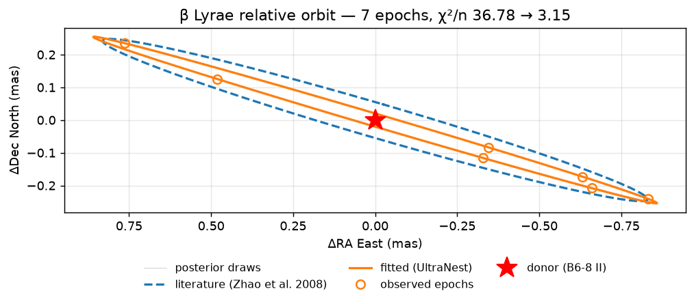
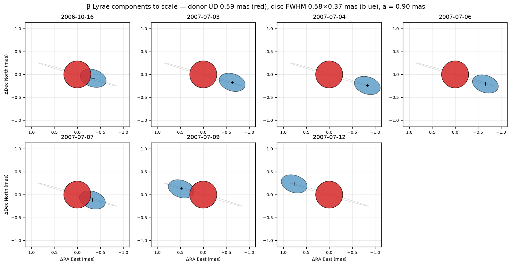

Binary Orbits
ROTIR can model binary systems where one or both components are resolved by interferometry. This guide shows how to set up orbital elements, compute positions and radial velocities, and visualize the system.
Orbital elements
Binary orbits are defined by a binaryparameters NamedTuple, which holds two starparameters NamedTuples plus the orbital elements:
using ROTIR
# Spica-like binary (Aufdenberg+2015)
# starparameters() and binaryparameters() return NamedTuples
star1 = starparameters(
0.465, # rpole: polar radius (mas)
25300.0, # tpole: polar temperature (K)
0.0, # frac_escapevel: rotational velocity fraction
3, # ldtype: Hestroffer limb darkening
0.15, # ld1: LD coefficient
0.0, # ld2: (unused for Hestroffer)
0.25, # beta_vZ: von Zeipel exponent (radiative)
0.0, # B_rot: differential rotation
64.0, # inclination (degrees)
129.938, # position_angle (degrees)
0.0, # rotation_offset (degrees)
4.0145, # rotation_period (days)
)
star2 = starparameters(
0.285, 20585.0, 0.0, 3, 0.15, 0.0, 0.25, 0.0, 64.0, 129.938, 0.0, 4.0145)
bparams = binaryparameters(
star1, star2,
77.0, # d: distance (pc)
116.0, # i: orbital inclination (degrees; >90 = retrograde)
309.938, # Ω: longitude of ascending node (degrees)
255.0, # ω: argument of periapsis (degrees, relative orbit)
4.0145, # P: orbital period (days)
1.54, # a: semi-major axis (mas)
0.123, # e: eccentricity
2454189.40, # T0: time of periastron (JD)
0.6188, # q: mass ratio M₂/M₁
[1.0, 1.0], # fillout factors (unused for spheres)
0.0, # dP: period derivative (days/day)
0.0, # dω: apsidal motion (degrees/day)
)Both starparameters() and binaryparameters() return NamedTuples, so you can also construct them directly:
star1 = (rpole=0.465, tpole=25300.0, frac_escapevel=0.0, ldtype=3,
ld1=0.15, ld2=0.0, beta_vZ=0.25, B_rot=0.0,
inclination=64.0, position_angle=129.938,
rotation_offset=0.0, rotation_period=4.0145)Use merge() to override individual fields without rebuilding from scratch:
star1_tilted = merge(star1, (inclination=75.0, position_angle=140.0))
bparams_circ = merge(bparams, (e=0.0,))See Conventions for a full description of each parameter and the coordinate frame.
Computing orbital positions
# Relative orbit: secondary position relative to primary
# Returns (0, 0, 0, x, y, z) in the observer frame (North, East, away)
x1, y1, z1, x2, y2, z2 = binary_orbit_rel(bparams, tepoch_jd)
# Absolute orbit: both components relative to center of mass
x1, y1, z1, x2, y2, z2 = binary_orbit_abs(bparams, tepoch_jd)
# Projected separation and position angle over multiple epochs
x, y, ρ, θ = binary_proj_plane(bparams, tepochs_jd)
# Instantaneous separation in units of a (semi-major axis)
D = compute_separation(bparams, tepoch_jd)The orbital output frame has x=North, y=East, z=away from observer. Use orbit_to_rotir_offset to convert to ROTIR's (West, North) plotting frame.
Orbital diagram

The orbit of the secondary (blue) relative to the primary (gold), projected on the sky plane. East is to the left following the astronomical convention.
Sky-plane binary image
To render the binary on the sky at a specific epoch, use plot2d_binary:
# create_star needs reconstruction-style NamedTuples (with surface_type, beta, etc.)
star1_params = (surface_type=0, radius=star1.rpole, tpole=star1.tpole,
ldtype=star1.ldtype, ld1=star1.ld1, ld2=star1.ld2,
inclination=star1.inclination, position_angle=star1.position_angle,
rotation_period=star1.rotation_period)
star2_params = (surface_type=0, radius=star2.rpole, tpole=star2.tpole,
ldtype=star2.ldtype, ld1=star2.ld1, ld2=star2.ld2,
inclination=star2.inclination, position_angle=star2.position_angle,
rotation_period=star2.rotation_period)
tessels1 = tessellation_healpix(3)
tessels2 = tessellation_healpix(2)
star1_geom = create_star(tessels1, star1_params, 0.0)
star2_geom = create_star(tessels2, star2_params, 0.0)
tmap1 = parametric_temperature_map(star1_params, star1_geom)
tmap2 = parametric_temperature_map(star2_params, star2_geom)
# Plot at a specific Julian Date
fig, ax = plot2d_binary(tmap1, tmap2, star1_geom, star2_geom, bparams, tepoch_jd;
intensity=true, graticules=true, compass=true,
inclination1=64.0, position_angle1=129.938,
inclination2=64.0, position_angle2=129.938)The function automatically places the secondary at the correct orbital offset and handles occlusion (the farther star is drawn behind the nearer one).

Radial velocities
binary_RV computes radial velocities for both components given the semi-amplitudes K₁, K₂ and systemic velocity γ:
# Compute RV at a single epoch or vector of epochs
rv1, rv2 = binary_RV(bparams, tepochs_jd; K1=123.9, K2=198.8, γ=0.0)
# Plot the RV curves (optionally overlay data)
fig, ax = plot_rv(bparams; K1=123.9, K2=198.8, γ=0.0,
rv_data1=data_rv1, rv_data2=data_rv2)The sign convention follows spectroscopy: positive = receding (redshift).

Forward model for interferometry
For fitting interferometric data, ROTIR computes binary complex visibilities by combining both components with the correct phase shift from the orbital separation:
# Get secondary offset in ROTIR coordinates (West, North)
offset_x, offset_y = orbit_to_rotir_offset(bparams, tepoch_jd)
# Phase shift per baseline from the binary separation
phase = binary_phase_shift(data.uv, offset_x, offset_y)
# Combined model observables
v2, t3amp, t3phi = binary_observables(tmap1, star1, tmap2, star2, data, phase)
# Chi-squared
chi2 = binary_chi2_f(tmap1, star1, tmap2, star2, data, phase)Two stars in one frame
The snippet above places the secondary with a Fourier phase shift, which is all the visibility model needs. It says nothing about how each component is oriented in 3-D, so it is not enough once the surfaces are tidally distorted or once the components illuminate each other: a Roche lobe's tidal bulge has to point at the companion, and mutual irradiation needs the companion's direction relative to every surface element.
create_binary_geometry builds both components in a single frame derived from the orbit itself:
star1, star2 = create_binary_geometry(tes1, params1, tes2, params2, bparams, tepoch_jd;
volume_conserving=true)
tmap1 = parametric_temperature_map(params1, star1)
tmap2 = parametric_temperature_map(params2, star2; secondary=true)
heated1, heated2 = handle_reflection(star1, tmap1, star2, tmap2; albedo1=0.6, albedo2=0.6)Use this instead of calling create_star twice with a dummy t. create_star takes its t for both the Roche shape (through D(t)) and the spin phase, with nothing tying the bulge to the line of centres — so passing real epoch times rotates the star without rotating the bulge with it, and passing t = 0 freezes both.
See also check_binary_overlap: binary_cvis sums the two components with no mutual occultation, which is wrong once their disks overlap on the sky.
Fitting orbital elements to interferometric data
The snippets above evaluate an orbit. This section is about fitting one: recovering the elements from OIFITS data.
The chain is deliberately direct — no intermediate per-epoch astrometry, no hand-made error ellipses:
(orbital elements, component sizes) → separation at each observation
→ component visibilities → combined complex visibility → observables → one χ²The likelihood is the OIFITS errors on V², T3amp and T3φ over the whole dataset at once.
Working examples, named after the sampler they use:
| Script | System | Sampler |
|---|---|---|
demos/spica_orbit_fit_ultranest.jl | Spica — two limb/uniform discs, eccentric orbit | UltraNest |
betlyr/betlyr_orbit_fit_ultranest.jl | β Lyrae — donor + accretion disc, circular orbit | UltraNest |
betlyr/betlyr_orbit_fit_pigeons.jl | β Lyrae, same model | Pigeons |
betlyr/betlyr_orbit_figure.jl | β Lyrae — redraws the orbit from a stored fit | (none) |
For β Lyr the model lives in betlyr/betlyr_model.jl and both drivers include it, so the sampler can be swapped without the model drifting between them. See Worked example: β Lyrae below for the converged result.
Why sample rather than optimise
These posteriors are multimodal, and not subtly. A scan over Spica's (ω, dω) alone runs from χ²/n = 73 to 232 with a degeneracy valley whose preferred sign of dω flips with ω. A local optimiser reports whichever basin it started in, with confident error bars.
Use an analytic component model for the orbit
Fit the orbit with analytic components — uniform discs, elliptical Gaussians — not a tessellated Roche surface. A tessellated χ² costs ~0.2–2 s per likelihood against ~0.2–0.3 ms for the analytic version, and the orbit is set by the separation, to which the surface detail is a few-percent correction. Fit the orbit first, then hand it to the full model.
ud_vis(diam, ρ) = (t = diam / MAS_PER_RAD * pi .* ρ .+ 1e-10; 2 .* besselj1.(t) ./ t)visibility_ud, visibility_ldlin, visibility_ldquad, visibility_ldpow and visibility_Gaussian are re-exported from OITOOLS for this purpose.
Use per-observation times, not one time per night
The orbit must be evaluated at each observation's own MJD. A single mean epoch per night smears the binary: Spica's 2015 nights span ~4.7 h each, over which the secondary moves 0.24–0.52 mas and the position angle swings 8–38° — ten times the astrometric precision.
Two practical points:
uv_mjdis stored in the data eltype (Float32), which quantises MJD ≈ 57131 to ~5.6 minutes. Reconstruct per-uv times from theFloat64v2_mjd/t3_mjdthroughindx_v2/indx_t3_1,2,3instead.- Many uv points share a time (one exposure, many baselines), so solve the orbit once per distinct time and broadcast back — 17× fewer Kepler solves for Spica, 26× for β Lyrae.
The (Ω, ω) degeneracy is exact — handle it explicitly
Under (Ω, ω) → (Ω+180°, ω+180°) every Thiele–Innes constant is unchanged (each term picks up two sign flips), so the predicted separation, and therefore every interferometric observable, is exactly invariant. Sampling the full range returns a perfectly bimodal posterior that is an artefact. Restrict Ω to [0°, 180°).
Two traps:
- The fold is only valid applied to the pair. Moving Ω alone mirrors the position vector, and closure phase changes sign under a mirror — for Spica that inflated χ²ₜ₃ₚ/n from 291 to 811.
- For a circular orbit ω is undefined and degenerate with T₀; the residual degeneracy becomes
(Ω, T₀) → (Ω+180°, T₀ + P/2). Pin ω, restrict Ω, and let T₀ span a full period.
Choosing the sampler
UltraNest (ultranest via PythonCall) gives log Z out of the box and needs no tuning. Vectorize it, following OITOOLS' fit_model_ultranest idiom, so the Julia↔Python crossing is paid once per batch instead of once per live point:
prior_v(U::AbstractMatrix{<:Real}) =
Py(reduce(vcat, (u -> prior_1(u)').(eachrow(U)))).to_numpy()
loglike_v(X::AbstractMatrix{<:Real}) = Py(loglike_1.(eachrow(X))).to_numpy()
sampler = ultranest.ReactiveNestedSampler(pylist(names), loglike_v;
transform = prior_v, vectorized = true)Three details to get right:
- Declare the argument types.
::AbstractMatrix{<:Real}is what makes PythonCall convert the numpy batch to a Julia matrix. Without it the argument stays aPyandcollectraisesMethodError: no method matching (Array{Float64})(::Py). - Return numpy, via
.to_numpy(). A bare Julia array reaches Python as ajuliacall.VectorValue, and UltraNest calls numpy methods (.transpose) on it. pylist(names), not a JuliaVector. UltraNest evaluatesnames + [...]internally, and aVectorValuedoes not support+.
A multithreaded session is safe: PythonCall's finalizer enqueues the pointer, and the queue is only drained by a thread holding the GIL (PyGILState_Check, PythonCall/src/GC/GC.jl), so a Py object may be finalized on any thread. A full UltraNest run completes under julia -t 8 with Py objects being finalized on worker threads throughout.
What is still true: Python may only be called from a thread that holds the GIL. Driving the sampler from one thread is fine; calling Python inside a Threads.@threads body without PythonCall.GIL.@lock still segfaults. So a likelihood that itself touches Python must stay single-threaded, while one that is pure Julia may now run in a threaded session.
Pigeons (Pigeons.jl, native Julia) is the way to use more than one core, and it reports round trips — the diagnostic that tells you whether the chain actually moved between modes. Measured on the β Lyr fit, 8 chains × 32 scans:
| wall | |
|---|---|
multithreaded = true | 35.8 s |
multithreaded = false | 139.8 s |
3.9× on 8 chains; the ceiling is n_chains, not core count, so raise N_CHAINS to use a big machine. It also returns log Z via stepping stone, so nothing is lost.
Sample in an unconstrained space so the reference can be a plain wide Gaussian — θ = lo + (hi−lo)·σ(z), including the log-Jacobian so a uniform box prior stays uniform after the change of variables (z_to_theta, log_jacobian, theta_to_z in betlyr_model.jl).
using ROTIR loads PythonPlot unconditionally, so Py objects exist in a Pigeons session too. That is fine — PythonCall defers decrefs until a thread holds the GIL, so there is no need to plot only after sampling or to force GC.gc(true) before pigeons(...). Some demos still do both; it is harmless.
Always check Pigeons.n_round_trips(pt) before believing an interval. Zero round trips means the chain never travelled between reference and target, so it has not demonstrated it can leave the basin it started in.
Watching a Pigeons run as it goes
Pigeons exposes no per-scan callback, and a fixed scan interval would be the wrong granularity anyway: it works in doubling rounds (round r is 2^r scans) and adapts the ladder and the explorer between rounds, so the round boundary is the only point where the state is settled. Because rounds double, reporting at each one is automatically dense early and sparse late.
Run one round at a time. This is not an approximation of a single n_rounds = N call — it is that call, paused; the log Z, round-trip count and traces come out bit-for-bit identical:
pt = pigeons(; kw..., n_rounds = 1, show_report = false)
report_round!(pt, 1)
for r in 2:N_ROUNDS
global pt = pigeons(Pigeons.increment_n_rounds!(pt, 1))
report_round!(pt, r)
endSummarise the round's trace (a median over Pigeons.get_sample(pt)), not the single latest state — one MCMC draw wanders by a full posterior width and reads as noise. betlyr_orbit_fit_pigeons.jl does this under VERBOSE=1.
Gradients
The orbit forward model is differentiable end to end, Kepler's equation included. kepler_E carries an analytic rrule/frule from the implicit function theorem,
M = E − e·sin E ⇒ ∂E/∂M = 1/(1 − e·cos E), ∂E/∂e = sin E/(1 − e·cos E)which is exact at the converged root and costs two trig calls, rather than taping the Newton iteration. 1 − e·cos E = r/a > 0, so it is never singular on an ellipse.
Three things had to be true besides Kepler, and each was a real obstacle:
- No array mutation. Zygote refuses
setindex!. Thecvis[k] = …phasor loop andz_to_theta'sθ[p] = …both had to become broadcasts/comprehensions (z_to_theta_ad). This, not Kepler, was the actual blocker. - Vectorise over epochs. Looping the scalar
orbit_to_rotir_offsetmakes reverse mode tape one closure per epoch; the overhead was 512× the primal for 55 epochs. The vectorised method (orbit_to_rotir_offset(bparams, tepochs::AbstractVector)) tapes a handful of array ops instead, and is ~6× faster in the primal too. - Type stability. OITOOLS declares
OIdata's data fields asVector{T} where T<:AbstractFloat— non-concrete — sod.v2defeats inference and the abstractness propagates untilchi2_totalinfers asAny. Copy what the hot loop needs into concreteVector{Float64}constants at load time. Check withJET.@report_opt chi2_total(θ); it should report zero runtime dispatches.
Measured on the β Lyr fit (10 free parameters, χ² = 0.42 ms), all agreeing to 1e-12 against central_fdm(5, 1):
| method | cost | note |
|---|---|---|
| ForwardDiff | 8.1× primal | best at this dimension |
| Zygote (reverse) | 10.9× | overtakes forward mode above ~25 parameters |
| central differences | 20× (2n evals) | scales with n |
central_fdm(5, 1) | 40× (4n evals) | scales with n |
Forward mode wins here because the model is a chain of small dense array operations: reverse mode pays tape and allocation overhead per operation, forward mode just widens the element type.
central_fdm's adaptive step search will happily push dP (~6e-7 d/d) to O(1e-2), which is unphysical and trips the quadratic-ephemeris fallback. Pass a per-parameter max_range. Conversely T0 needs a large step: at ~2.45e6 JD a 1e-6 step leaves only ~4 significant digits after cancellation.
Whether a gradient is worth having is a separate question from whether it exists, and it is settled by round trips per unit work rather than by gradient cost. Slice sampling spends ~765 likelihood evaluations per chain-scan at this dimension (3 passes × 10 coordinates × ~25 doubling/shrinking steps), so an explorer costing ~8× per step can afford a lot of steps. Run EXPLORER=slice and EXPLORER=mala and compare n_round_trips on your problem.
Nothing above involves mutual occultation — these analytic-component fits simply sum the two components. If you add occultation, use the :soft path from occultation_weights: its sigmoid is C∞. The :exact Sutherland–Hodgman area is continuous and piecewise-smooth, so a kink only degrades HMC's acceptance rather than breaking correctness — but the near/far branch (which star is in front) is a genuine discontinuity in a flat-disc model, it lands exactly at conjunction, and for an eclipsing system like β Lyr that is where the most informative data are.
Worked example: β Lyrae
Everything above comes together in demos/betlyr/betlyr_orbit_fit_ultranest.jl, run on the 2006–2007 MIRC nights (DATASET=old, the default) so the result is directly comparable with the published elements. The model is a uniform disc for the B6–8 II donor plus an elliptical Gaussian for the accretion disc, on a circular orbit — 10 free parameters, 1970 data points across 7 epochs.

The grey posterior draws are invisible because they lie under the fitted curve: with 26268 samples the orbit is determined far more tightly than the difference from the starting elements. That is what a converged posterior looks like here — a visible fan would mean the opposite.
The orbit alone does not show how large the components are relative to it, which here is the first thing to check — a is 0.90 mas while the donor is 0.59 mas across:

Note that the two components visibly overlap on the sky at several epochs. model_cvis sums them with a phase shift and has no occultation term, so at those epochs the model double-counts the overlap — the same caveat that applies to binary_cvis, and a real one for an eclipsing system.
The overlap is more pervasive than the FWHM ellipses suggest. By half-FWHM it affects 3 of 7 epochs (2006-10-16, 2007-07-07, 2007-07-09) and 45 % of the orbit, with a minimum projected separation of 0.02 mas — essentially central. But a Gaussian has no edge: using its 2σ extent (0.49 mas) instead, only 2007-07-04 is clean. Both geometries also occur in the data — the disc is in front in October and behind in July — so the un-modelled effect changes sign between epochs rather than acting as a common offset.
Adding occultation is not a small patch, because a Gaussian is a brightness distribution with no surface, so occulting it is undefined until the disc is given physical structure. The two coherent options are to treat the donor as opaque and the disc as optically thin (one-sided, cheap), or to replace the Gaussian with an opaque elliptical disc and use occultation_weights. Either way the closed-form visibility is lost and the model has to move to an image plane plus NFFT, which is what makes this a project rather than a correction.
Note also that six of the seven epochs fall in a nine-day window in July 2007, so the phase coverage behind these elements is uneven.
| literature | fitted | posterior sd | |
|---|---|---|---|
a_mas | 0.865 | 0.8958 | 0.00065 |
incl_deg | 93.50 | 91.244 | 0.046 |
Omega_deg | 73.70 | 73.529 | 0.040 |
T0_JD | 2454283.043 | 2454283.0555 | 0.0017 |
P_d | 12.9414 | 12.9616 | 0.0017 |
ud_donor_mas | 0.570 | 0.5898 | 0.0032 |
disc_fwhm_mas | 0.900 | 0.5825 | 0.0022 |
disc_ratio | 0.6058 | 0.6423 | 0.0051 |
disc_pa_deg | (73.70) | 108.353 | 0.224 |
f_disc | 0.8065 | 0.8179 | 0.0031 |
and the fit quality, by observable:
| literature | fitted | |
|---|---|---|
| V² (858) | 9.46 | 1.47 |
| T3amp (556) | 7.85 | 1.57 |
| T3φ (556) | 107.85 | 7.33 |
| total (1970) | 36.78 | 3.15 |
The closure phases carry the result: χ²ₜ₃ₚ/n falls by a factor 15. That is the expected signature — T3φ is what constrains the asymmetry of the disc-plus-donor pair, so it is the observable that moves when the disc geometry is refitted rather than assumed.
Three things are worth reading carefully before quoting any of this.
The orbital elements barely move, and that is the point. a, i, Ω, T0 all land within a few percent of the published values — Ω within 0.17°. The large χ² improvement comes almost entirely from the disc parameters, not the orbit. So this is a consistency check on Zhao et al.'s astrometry, not a revision of it.
disc_pa_deg has no literature entry — the parenthesised 73.70 is mod(Ω, 180°), the orbital node reused as a starting guess in betlyr_params.jl, not an independently published disc position angle. The fit moving it to 108.4° is therefore a measurement of a quantity that was previously assumed, not a disagreement.
Read that number through the parameterisation before interpreting it. In ellgauss_vis the ratio multiplies the rotated up coordinate, which makes the source narrower along pa — so disc_pa_deg is the minor axis, the major axis is at pa + 90°, and disc_fwhm_mas is the major FWHM. And φ runs from +RA toward +Dec, so the astronomical PA (North through East) is 90° − φ. The fitted major axis therefore sits at astro PA 71.65° against a line of nodes of 73.53° — aligned to 1.9°, which is exactly what a coplanar disc should do, and a good consistency check on the fit rather than an anomaly.
disc_fwhm_mas shrinking 0.90 → 0.58 is the substantive change, and it is worth remembering that an elliptical Gaussian is the only freedom this model has to absorb any asymmetric structure.
The posterior sd on P_d is a prior width, not a measurement. The visibilities carry essentially no information on the period over a 269 d baseline — see the PMAX discussion in betlyr_params.jl — so that column reflects the ephemeris prior. The same caution applies to any parameter whose sd is close to its prior half-width.
Refitting the same ten parameters on subsets of the epochs moves them by tens of posterior sd, in opposite directions depending on which subset: dropping the three smallest-separation epochs shifts T0 by −60σ and disc_fwhm by +45σ, while dropping the three largest shifts a by +60σ and Ω by −33σ. With 4 of 7 epochs the statistical error should only grow by ~√(7/4), so shifts of order 1σ are expected and these are not.
Those widths are therefore the curvature of the likelihood under this model, not the uncertainty on the orbit. The likeliest cause is the missing occultation term described below: the components overlap on the sky at 3 of 7 epochs by half-FWHM, and at 6 of 7 once the Gaussian's real 2σ extent is used, so nearly every epoch is contaminated and different subsets settle on different compromises. Treat the element values as a consistency check against Zhao et al. and do not propagate the sd column as an error bar.
To regenerate the figure and the tables from the stored posterior without re-running the sampler (seconds rather than hours):
julia --project=demos demos/betlyr/betlyr_orbit_figure.jlFitting interferometry together with radial velocities
Interferometry and RVs are complementary, and the combination is worth more than either:
- RVs break the (Ω, ω) mirror, which no amount of astrometry can resolve. With them Ω may span the full
[0°, 360°). - K₁ and K₂ give
a·sin iandq; with the interferometric angularathat yields dynamical masses and an orbital parallax.
demos/spica_orbit_fit_ultranest.jl does this under USERV=1, adding K₁, K₂ and γ to the free parameters and chi2_rv to the total. The model is binary_RV, which already applies apsidal motion through omega_at.
USERV=1 LIVE=400 julia --project=demos demos/spica_orbit_fit_ultranest.jlThe branch matters here. (Ω,ω) → (Ω±180°, ω±180°) is invariant for astrometry but not for RVs — an RV depends on ω alone, so shifting it by 180° inverts the curve. That is exactly the ambiguity being resolved: for Spica, χ²_RV at the literature start is 8.1 per point on the true branch and 586 on the mirror, a factor of 72.
Data availability and quality, honestly
| System | RVs in the repo |
|---|---|
| Spica | demos/data/all_rv_1_ORIG.txt, all_rv_2_ORIG.txt — 33 + 33 points |
| β Lyrae | none |
The Spica RVs need care before they carry weight:
They span 48 days in 2000, ~7 years and 639 orbits before the interferometry. A joint fit therefore must include
dω(β Lyr-styledPfor other systems).The error column is a placeholder — every point is exactly 1.00 km/s. Taken literally the RV χ² would swamp the 6871 interferometric points.
The residuals are strongly separation-dependent, the classic blended-line signature for a
v sin i= 161 km/s SB2:|V₂−V₁| (km/s) mean |residual| 0–50 36.7 100–200 21.8 300–600 7.2
So an empirical model σ(Δ) = 7 + 30·exp(−|Δ|/100) km/s is used, which down-weights the blended points rather than discarding them. Cutting them instead drops the rms to 5.2 km/s but biases K₁, K₂ by ~7% and leaves ω unconstrained — they carry exactly the phases that constrain the curve's shape.
Getting below ~5 km/s means going back to the archival spectra and doing spectral disentangling, as Tkachenko et al. (2016) did. That is a data problem, not a code problem.